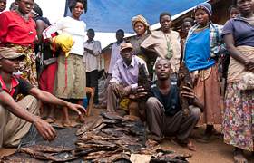

Lezione 21  La decolonizzazione
La decolonizzazione

Gli Stati africani nati dal processo di decolonizzazione degli anni Sessanta hanno mantenuto i confini coloniali, cioè i confini che erano stati tracciati dai colonizzatori europei verso la fine dell'Ottocento.
Questo ha creato spesso problemi di stabilità politica all’interno dei nuovi Stati indipendenti: vediamo il perché, analizzando il caso dell’Uganda, un piccolo paese che si affaccia sul Lago Vittoria.
L'Uganda nasce come protettorato inglese nel 1894: i confini e la sua formazione sono da attribuire ai colonizzatori di fine Ottocento, che spartirono i territori africani tracciando i confini "a tavolino", davanti a una carta geografica. Gli inglesi si aggiudicarono i territori della futura Uganda, e, per amministrarli, tracciarono nuove suddivisioni, interne ai confini ugandesi - le divisioni amministrative - che tenevano conto della diversità culturale presente sul territorio.
L’Uganda ingloba ancora oggi popoli e culture diversissime tra loro: la sua superficie supera di poco i 240.000 Km2 (l’Italia ha un’area di 301.338 Km2), su cui vivono all'incirca 30 milioni di abitanti. La popolazione è divisa in 65 gruppi etnici, a cui corrispondono grosso modo altrettante lingue.
Le linee di separazione tracciate dai colonizzatori divisero intere popolazioni: è il caso del confini esterni, come quello tra Uganda e Congo, che divise la popolazione Bahira in due parti, dando vita alla popolazione dei Banande (in Congo) e alla popolazione dei Bakonzo (in Uganda).
I confini interni, invece, cioè le divisioni amministrative, cristallizzarono e irrigidirono le differenze tra un gruppo e l’altro, per esempio rafforzando le identità culturali di quelle aree che all’arrivo dei coloni europei erano regni centralizzati, come il Regno del Buganda e il Regno del Bunyoro.
Queste divisioni rafforzarono le differenze etnico-culturali presenti sul territorio ugandese, e resero più difficile - al momento dell'indipendeza - la creazione di una unità nazionale.
Furono creati, così, i presupposti per futuri movimenti di rivendicazione identitaria su base etnica, che sono stati numerosi nel Novecento, in Uganda, ma anche in tutta l'Africa.